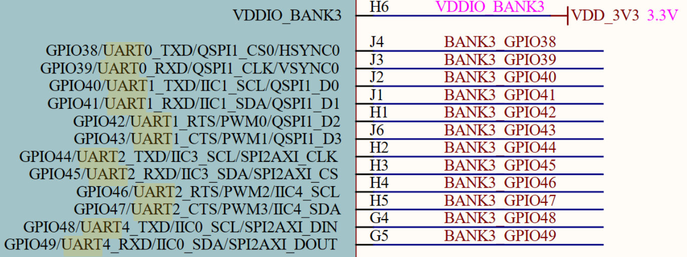
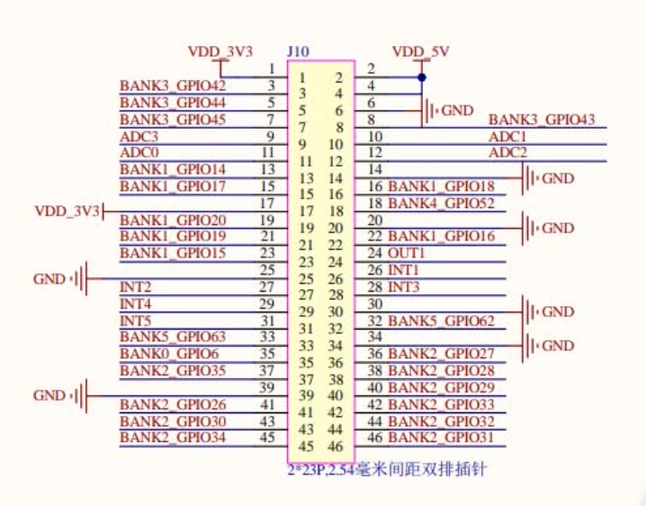
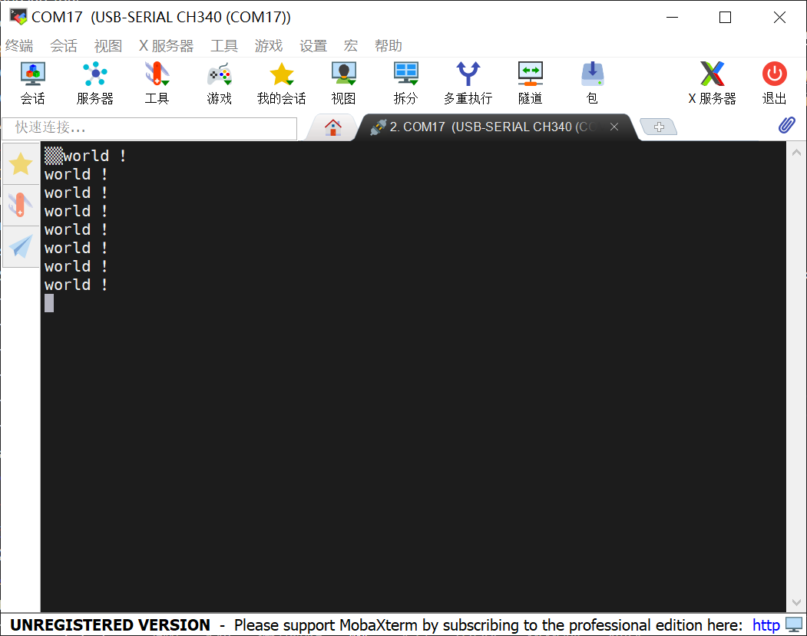

韦东山Canmv|AIOT开发
前言
这是个委托，要求完成串口的配置。
预备
简单网络查询即可得知板子官方资料网站，得到资料下载网站。查阅硬件原理图即可得知所需UART串口的GPIO号，本次使用串口2，即TXD：44，RXD45，对照实际硬件原理图，得知TXD：5，RXD：7。


- 使用
stty工具查询串口配置：1
2
3
4
5
6/sys/kernel/config/usb_gadget/demo # stty -F /dev/ttyS2
speed 9600 baud; line = 0;
intr = ^C; quit = ^\; erase = ^?; kill = ^U; eof = ^D; eol = <undef>;
eol2 = <undef>; swtch = <undef>; start = ^Q; stop = ^S; susp = ^Z; rprnt = ^R;
werase = ^W; lnext = ^V; flush = ^O; min = 1; time = 0;
-brkint -imaxbel - 通过TTL转USB工具，将板子与电脑连接起来，测试串口是否正常使用。
1
echo "Hello" > /dev/ttyS2
开始编程
- 下载编译器
1
wget https://occ-oss-prod.oss-cn-hangzhou.aliyuncs.com/resource//1659325511536/Xuantie-900-gcc-linux-5.10.4-glibc-x86_64-V2.6.0-20220715.tar.gz
- 写Makefile
1
2
3
4
5
6
7
8
9
10
11
12
13
14
15
16
17
18
19
20
21
22
23
24
25
26# 定义工具链和编译器
CC = /home/remi/Desktop/CanMv/sdk/Xuantie-900-gcc-linux-5.10.4-glibc-x86_64-V2.6.0/bin/riscv64-unknown-linux-gnu-gcc
# 定义编译和链接选项
CFLAGS =
LDFLAGS =
# 定义目标文件
TARGET = main.elf
OBJS = main.o
# 默认目标
all: $(TARGET)
# 编译规则
%.o: %.c
$(CC) $(CFLAGS) -o $@ -c $<
# 链接规则
$(TARGET): $(OBJS)
$(CC) -o $@ $(OBJS)
# 清理规则
clean:
rm -f $(OBJS) $(TARGET) - 串口测试程序
由上可知，sdk已经在驱动层面配置好了串口，所以使用系统调用open直接打开串口，获取文件描述符配置为非阻塞模式，而后使用termios构建结构体并初始化相关参数，应用于串口即可。1
2
3
4
5
6
7
8
9
10
11
12
13
14
15
16
17
18
19
20
21
22
23
24
25
26
27
28
29
30
31
32
33
34
35
36
37
38
39
40
41
42
43
44
45
46
47
48
49
50
51
52
53
54
55
56
57
58
59
int main()
{
int serial_port = open("/dev/ttyS2", O_RDWR);
if (serial_port < 0)
{
perror("Error opening serial port");
return 1;
}
int flags = fcntl(serial_port, F_GETFL, 0);
fcntl(fd, F_SETFL, flags | O_NONBLOCK);//设为非阻塞模式
struct termios tty;
memset(&tty, 0, sizeof tty);
if (tcgetattr(serial_port, &tty) != 0)
{
perror("Error from tcgetattr");
return 1;
}
// 波特率在这里修改
cfsetospeed(&tty, B9600);
cfsetispeed(&tty, B9600);
// 8 bits, no parity, 1 stop bit
tty.c_cflag = (tty.c_cflag & ~CSIZE) | CS8;
tty.c_cflag &= ~PARENB; // No parity
tty.c_cflag &= ~CSTOPB; // 1 stop bit
tty.c_cflag &= ~CRTSCTS; // No hardware flow control
tty.c_cflag |= CREAD | CLOCAL; // Turn on READ & ignore ctrl lines
cfmakeraw(&tty);
tcflush(serial_port, TCIFLUSH);
if (tcsetattr(serial_port, TCSANOW, &tty) != 0)
{
perror("Error from tcsetattr");
return 1;
}
while (1)
{
const char *msg = "Hello, World!\n";
write(serial_port, msg, strlen(msg));
sleep(1);
}
close(serial_port);
return 0;
}
业务代码
委托人要求实现与上位机的通讯，研究后采用状态机的方法，具体代码不附。1
2
3
4
5
6
7
8
9
10
11
12
13
14
15
16
17
18
19
20
21// UART 初始化函数
int uart_init(int *fd)
{
*fd = open(UART_DEVICE_NAME, O_RDWR | O_NOCTTY | O_NDELAY);//读写模式|非终端|非阻塞
if (*fd == -1)
{
perror("打开 UART2 失败");
return -1;
}
struct termios options;
tcgetattr(*fd, &options);
options.c_cflag = B115200 | CS8 | CLOCAL | CREAD;
options.c_iflag = IGNPAR;
options.c_oflag = 0;
options.c_lflag = 0;
tcflush(*fd, TCIFLUSH);//清除输入输出缓冲区
tcsetattr(*fd, TCSANOW, &options);//立即应用
return 0;
}
本博客所有文章除特别声明外，均采用 CC BY-NC-SA 4.0 许可协议。转载请注明来自 DIKLE | 记录！